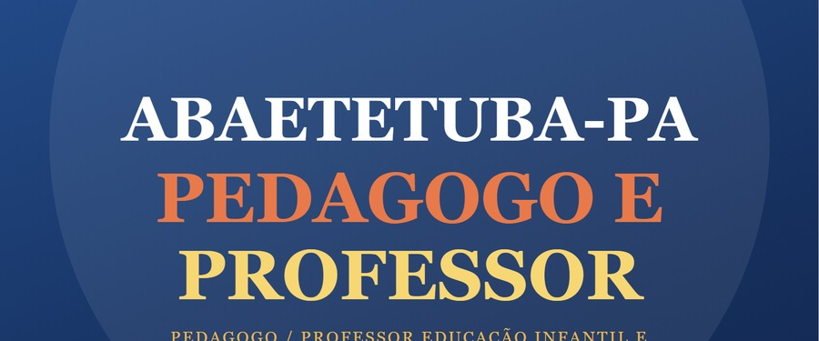

Prefeitura de Abaetetuba-PA
resumo oficial do edital
Cronograma, salários e conteúdo programático, extraídos diretamente do edital publicado pelo Instituto Vicente Nelson (IVIN). Página informativa — não é material de venda.
APOSTILA em PDF — Pedagogo / Professor ▾
💬 Participe do nosso grupo sobre o concurso de Abaetetuba!


⚠️ É Concurso Público, não processo seletivo — o edital usa literalmente o termo "Concurso Público de Provas e/ou Provas e Títulos" (Capítulo I, item 1). Regime jurídico e estabilidade de concurso público de verdade.
📅 Cronograma Oficial
Anexo I do Edital — datas previstas, sujeitas a alteração pela Prefeitura/IVIN.
| Etapa | Data |
|---|---|
| Publicação do Edital | 29/07/2026 |
| Período de Inscrições (só online) | 10/08 a 10/09/2026 |
| Requerimento de Isenção de Taxa | 10 a 14/08/2026 |
| Prazo final de pagamento da inscrição | 11/09/2026 (até 21h) |
| Publicação dos locais de prova | 06/10/2026 |
| Prova — Dia 01 (Fundamental + Médio) | 18/10/2026 |
| Prova — Dia 02 (Pedagogo + Professor + Superior) | 01/11/2026 |
| Gabarito Preliminar — Dia 02 | 02/11/2026 |
| Recurso contra Gabarito — Dia 02 | 03 a 05/11/2026 |
| Gabarito Definitivo (pós-recursos) | 19/11/2026 |
| Resultado Preliminar da Prova Objetiva | 27/11/2026 |
| Recurso contra Resultado | 01 a 03/12/2026 |
| Resultado Pós-Recursos | 11/12/2026 |
| Convocação Teste de Aptidão Física / Títulos | 14/12/2026 |
| Aplicação do Teste de Aptidão Física | 10/01/2027 |
| Resultado Final (Definitivo) | 04/02/2027 |
💰 Salário, Carga Horária e Vagas
Vencimento base do Capítulo II do edital + total de vagas somado de todas as escolas/zonas (Anexo, cargo por cargo).
| Cargo | Salário | CH | Vagas |
|---|---|---|---|
| Pedagogo (SEMAD) | R$ 2.255,54 | 40h/sem. | 23 |
| Professor Fund. I / Licenciado em Pedagogia | R$ 2.565,31 | 20h/sem. | 635 |
| Professor Educação Infantil | R$ 2.565,31 | 20h/sem. | 194 |
| Professor Fund. I — Educação Física | R$ 2.565,31 | 20h/sem. | 29 |
| Professor Fund. II — Matemática | R$ 2.565,31 | 20h/sem. | 32 |
| Professor Fund. II — Língua Portuguesa | R$ 2.565,31 | 20h/sem. | 36 |
| Professor Fund. II — Ciências | R$ 2.565,31 | 20h/sem. | 19 |
| Professor Fund. II — Educação Física | R$ 2.565,31 | 20h/sem. | 20 |
| Professor Fund. II — Geografia | R$ 2.565,31 | 20h/sem. | 21 |
| Professor Fund. II — História | R$ 2.565,31 | 20h/sem. | 19 |
| Professor Fund. II — Língua Inglesa | R$ 2.565,31 | 20h/sem. | 20 |
| Professor Fund. II — Arte | R$ 2.565,31 | 20h/sem. | 19 |
| Professor Fund. II — Ensino Religioso | R$ 2.565,31 | 20h/sem. | 21 |
| Professor Tradutor Intérprete de Libras | R$ 2.565,31 | 20h/sem. | 20 |
| Psicopedagogo | R$ 2.255,54 | 40h/sem. | 5 |
Total de vagas de educação listadas acima: 1.113
Sobre gratificação e plano de carreira: o Edital 001/2026 e seus anexos não mencionam nenhuma gratificação (titulação, insalubridade, regência etc.) nem plano de carreira/progressão para os cargos de Pedagogo ou Professor. O valor acima é só o vencimento base do Capítulo II. Progressão de carreira normalmente está no Estatuto do Servidor / Plano de Cargos e Salários do município — uma lei separada do edital, vale consultar a Prefeitura ou o Diário Oficial diretamente.
📐 O que cai na prova de Matemática
Anexo III (Conteúdo Programático) — atenção, são dois níveis diferentes no mesmo edital.
Pedagogo / Professor Ed. Infantil e Fund. I: matemática básica/pedagógica — números, operações, frações, razão e proporção, porcentagem, geometria básica, estatística, raciocínio lógico e BNCC.
História da Matemática. Ensino de Matemática na Escola de Ensino Fundamental e Médio. Metodologia para o ensino de Matemática. Conjuntos numéricos: naturais, inteiros, racionais, reais e complexos. Representação e relação: pertinência, inclusão e igualdade. Operações: união, intersecção, diferença e complementar. Funções: definição, domínio, imagem, gráficos, crescimento e decrescimento, tipologia (injetora, sobrejetora, bijetora, par e ímpar), função composta e inversa. Funções de 1º grau (afim e linear), 2º grau (quadrática), modular, exponencial, logarítmica e polinomial. Operações algébricas com funções polinomiais. Trigonometria: arcos e ângulos, relações no círculo trigonométrico, redução ao 1º quadrante, relações métricas e trigonométricas no triângulo, funções trigonométricas, equações trigonométricas. Análise combinatória: teorema fundamental da contagem, arranjos, combinação, permutação, binômio de Newton. Probabilidade: espaço amostra, evento, probabilidade condicionada. Estatística: média, mediana, variável, desvio padrão, frequência, amplitude, medidas de posição e dispersão. Progressões aritméticas e geométricas. Matrizes, determinantes e sistemas lineares. Geometria analítica: ponto, reta, circunferência, movimentos no plano. Geometria espacial: poliedros convexos, prisma, pirâmide, cilindro.
+ Didática Geral, BNCC, Constituição Federal (arts. 1º-4º, 5º-17, 205-214), LDB (Lei 9.394/96), ECA (Lei 8.069/90), PNE (Lei 13.005/2014) e Educação Inclusiva.
📚 O que cai na prova de cada cargo (Educação)
Conteúdo programático oficial do Anexo III, cargo por cargo — clique pra abrir.
👉 clique em cada cargo pra ver o conteúdo completo
👉 Pedagogo 23 vagas▾
- Projeto pedagógico, planejamento e planos.
- Avaliação Escolar.
- Interação escola-família-comunidade.
- Importância dos recursos tecnológicos na escola.
- Prática educativa: ensino, estudo ativo, relações professor/aluno.
- Interdisciplinaridade e transversalidade.
- Direitos humanos.
- As Diretrizes e Bases da Educação Nacional (Lei nº 9394/96).
- Gestão do Processo em conhecimentos contextualizados e ancorados na ação.
- O uso de metodologias voltadas para práticas inovadoras.
- O processo de avaliação do desempenho escolar como instrumento de acompanhamento do trabalho do professor e dos avanços da aprendizagem do aluno.
- Os ambientes e materiais pedagógicos, os equipamentos e os recursos tecnológicos a serviço da aprendizagem.
- Educação e Sociedade: a sociedade e as outras ciências; estado e sociedade; a relação homem, escola e sociedade; educação como redenção da sociedade.
- Função Social da Escola.
- O Conhecimento: concepções e tipos; as formas de apropriação da realidade; os métodos; o conhecimento da escola.
- O construtivismo e Sociointeracionismo.
- Psicologia e Educação: psicologia como ciência; psicologia do desenvolvimento — fases de desenvolvimentos; infância e adolescência; a hereditariedade e o meio, motivação.
- Psicologia da aprendizagem, problemas de aprendizagem.
- Avaliação do processo de ensino e de natureza humana, cidadania e liberdade, dignidade e respeito à vida escolar como instrumento de formação do cidadão.
- Pluralidade Cultural e Diversidade cultural.
- Respeito aos povos.
- Meio Ambiente: combate ao desmatamento, crimes ambientais, agressão aos rios e mares.
- Orientação Sexual na infância.
- Trabalho e Consumo: a exploração do trabalho Infanto-Juvenil.
- Relações interativas em sala de aula.
- Competências e habilidades.
- Pilares da educação para o século XXI.
- Ética e Cidadania.
👉 Professor Fundamental I / Licenciado em Pedagogia 635 vagas▾
- Problemas de aprendizagem, fatores físicos, psíquicos e sociais; Educação no mundo atual; Recreação: atividades recreativas; Aprendizagem: leitura/escrita; Didática: métodos, técnicas, recursos/material didático; Processo Ensino-aprendizagem: avaliação; Planejamento de aula: habilidades e objetivos à avaliação; Desenvolvimento da linguagem oral, escrita, audição e leitura, métodos, técnicas e habilidades; Instrumentos/Atividades Pedagógicas; Métodos de Alfabetização; Tendências Pedagógicas; Papel do Professor; Decroly, Maria Montessori, Freinet, Rousseau, Vygotsky, Piaget, Paulo Freire; Psicologia da Educação, da Aprendizagem e do Desenvolvimento; Importância dos gêneros textuais e do lúdico no ciclo de alfabetização; A infância e sua singularidade na educação básica; Articulação dos conceitos: infância, brincadeira, ludicidade, desenvolvimento e aprendizagem.
- Diretrizes Curriculares Nacionais para a Educação Infantil (Resolução CNE/CEB nº 5/2009).
- Currículo e articulação das áreas do conhecimento.
- Avaliação no ciclo de alfabetização e retenção do aluno, planejamento do professor (rotina, sequência didática, projeto didático).
- Sistema de escrita alfabético-ortográfica: compreensão e valorização da cultura escrita, apropriação do sistema de escrita, leitura, produção de textos escritos, desenvolvimento da oralidade; Conceitos de língua, alfabetização, letramento; Gêneros textuais orais e escritos; Conceitos: movimento, tempo, cultura, fontes históricas, espaços, paisagem, sociedade, trabalho, natureza e representação, ambiente, relação entre ser humano e ambiente; Os campos conceituais da Matemática: numéricos, algébricos, geométricos e tratamento da informação.
+ Didática Geral, BNCC, Constituição Federal (arts. 1º-4º, 5º-17, 205-214), LDB (9.394/96), ECA (8.069/90), PNE (13.005/2014), Educação Inclusiva.
👉 Professor Educação Infantil 194 vagas▾
- Características da criança de 0 a 3 anos.
- Objetivos da educação infantil na idade escolar de 0 a 3 anos.
- Espaço físico e recursos materiais.
- A rotina escolar da creche.
- Cuidados essenciais: higiene da criança (banho, dentes e trocas de fraldas); educação alimentar; rotinas de atendimento à criança (proteção, sono, repouso e banho de sol).
- Cuidar e educar na rotina da creche.
- Conhecimento e incentivo ao desenvolvimento infantil.
- Ludicidade, jogos, brincadeiras e psicomotricidade.
- Etapas do desenvolvimento psicomotor.
- Processo de aprendizagem da leitura e da escrita.
- A criança e o número.
- Ampliação do repertório vocabular.
- Objetivos e importância do trabalho com histórias e desenho infantil.
- A importância do ensino de arte na escola e no desenvolvimento da criança.
- Planejamento e avaliação na educação infantil.
- Tendências e desafios atuais da educação.
- Política Nacional de Avaliação.
- Função da avaliação escolar.
- Práticas docentes na Educação Infantil (creche): objetivo, metodologia e avaliação.
- Planejamento de aula: habilidades - objetivos à avaliação.
- Métodos e processos no ensino da leitura, desenvolvimento da linguagem oral, escrita, audição e leitura.
- Diretrizes Curriculares Nacionais para a Educação Infantil (Documento das DCN da Educação Básica de 2013).
- Referencial Curricular Nacional para Educação Infantil.
- Política Nacional de Educação Especial na Perspectiva da Educação Inclusiva.
+ Didática Geral, BNCC, Constituição Federal (arts. 1º-4º, 5º-17, 205-214), LDB (9.394/96), ECA (8.069/90), PNE (13.005/2014), Educação Inclusiva.
👉 Professor Fund. II — Matemática 32 vagas▾
- História da Matemática.
- Ensino de Matemática na Escola de Ensino Fundamental e Médio.
- Metodologia para o ensino de Matemática.
- Conjuntos numéricos: naturais, inteiros, racionais, reais e complexos.
- Representação e relação: pertinência, inclusão e igualdade.
- Operações: união, intersecção, diferença e complementar.
- Funções: definição, domínio, imagem, gráficos, crescimento e decrescimento, tipologia (injetora, sobrejetora, bijetora, par e ímpar), função composta e inversa.
- Funções de 1º grau (afim e linear), 2º grau (quadrática), modular, exponencial, logarítmica e polinomial.
- Operações algébricas com funções polinomiais.
- Trigonometria: arcos e ângulos, relações no círculo trigonométrico, redução ao 1º quadrante, relações métricas e trigonométricas no triângulo, funções trigonométricas, equações trigonométricas.
- Análise combinatória: teorema fundamental da contagem, arranjos, combinação, permutação, binômio de Newton.
- Probabilidade: espaço amostra, evento, probabilidade condicionada.
- Estatística: média, mediana, variável, desvio padrão, frequência, amplitude, medidas de posição e dispersão.
- Progressões aritméticas e geométricas.
- Matrizes, determinantes e sistemas lineares.
- Geometria analítica: ponto, reta, circunferência, movimentos no plano.
- Geometria espacial: poliedros convexos, prisma, pirâmide, cilindro.
+ Didática Geral, BNCC, Constituição Federal (arts. 1º-4º, 5º-17, 205-214), LDB (9.394/96), ECA (8.069/90), PNE (13.005/2014), Educação Inclusiva.
👉 Professor Fund. II — Língua Portuguesa 36 vagas▾
- Concepções de linguagem; a língua como forma de interação; gêneros textuais orais e escritos e ensino; oralidade, escrita e ensino; fala e leitura, escrita e ensino; leitura e produção textual; articulação entre ler, escrever e as áreas do conhecimento; ensinar e aprender: perspectiva histórico-cultural.
- Compreensão e interpretação de textos.
- Denotação e Conotação.
- Sistema ortográfico vigente: emprego das letras e acentuação gráfica.
- Classes de palavras e suas flexões.
- Processo de formação de palavras.
- Verbos: conjugação, emprego dos tempos, modos e vozes verbais.
- Concordância Nominal e Verbal, Regência Nominal e Verbal.
+ Didática Geral, BNCC, Constituição Federal (arts. 1º-4º, 5º-17, 205-214), LDB (9.394/96), ECA (8.069/90), PNE (13.005/2014), Educação Inclusiva.
👉 Professor Fund. II — Ciências 19 vagas▾
- Ciências Morfológicas: anatomia humana, citologia, embriologia humana, histologia, morfologia, células.
- Ecologia; educação ambiental; genética; parasitologia; reino animal, vegetal e mineral; solo, água e ar.
- Classificação dos seres vivos, sistemas de classificação, regras de nomenclatura, categorias taxonômicas.
- Vírus.
- Reinos: Monera, Protista, Fungi, Plantae e Animalia.
- O corpo humano (órgãos e sistemas).
- Reprodução humana.
- Ecologia: cadeias e teias alimentares, biomas aquáticos e terrestres, impacto ambiental, poluição do ar e do solo, relações harmônicas e desarmônicas, relações intra e interespecíficas, biosfera, ecossistema, comunidade, população, fluxo de matéria e energia, biodiversidade.
- Sistema Solar (planetas).
- Conceitos básicos de Química: matéria e energia, fenômeno físico e químico, estados físicos e mudanças, substâncias puras e misturas, separação de misturas, tabela periódica, átomos, número atômico e de massa, distribuição eletrônica, funções químicas.
- Introdução à Física: grandezas escalares e vetoriais, tipos de movimentos, Leis de Newton, eletricidade, óptica.
- Hidrosfera: composição da água, propriedades, mudanças de fase, ciclo da água.
+ Didática Geral, BNCC, Constituição Federal (arts. 1º-4º, 5º-17, 205-214), LDB (9.394/96), ECA (8.069/90), PNE (13.005/2014), Educação Inclusiva.
👉 Professor Fund. II — Educação Física 20 vagas▾
- Históricos, conceitos e generalidades.
- Conhecimento teórico-prático das modalidades esportivas.
- Concepções psicomotoras na educação física escolar.
- Educação Física e o desenvolvimento humano.
- Metodologia para o ensino da Educação Física.
- As teorias da Educação Física e do Esporte.
- As qualidades físicas na Educação Física e desportos.
- Biologia do esporte.
- Fisiologia do exercício.
- Anatomia Humana.
- Dimensões filosóficas, antropológicas e sociais aplicadas à Educação e ao Esporte: lazer e as interfaces com a Educação Física, esporte, mídia.
- Dimensões biológicas aplicadas à Educação Física e ao Esporte: mudanças fisiológicas resultantes da atividade física.
- Educação física escolar e cidadania: objetivos, conteúdos, metodologia e avaliação.
- Esporte e Jogos na Escola: competição, cooperação e transformação didático-pedagógica.
- Crescimento e desenvolvimento motor.
+ Didática Geral, BNCC, Constituição Federal (arts. 1º-4º, 5º-17, 205-214), LDB (9.394/96), ECA (8.069/90), PNE (13.005/2014).
👉 Professor Fund. II — Geografia 21 vagas▾
- Evolução do pensamento geográfico; sociedade, natureza e território: do meio natural ao meio técnico-científico informacional; as ações humanas sobre a natureza; o espaço geográfico mundial e brasileiro: processo de industrialização; o processo de urbanização; o espaço agrário; o papel do Estado na organização do espaço; a dinâmica demográfica; globalização e geopolítica; o ensino de Geografia: princípios metodológicos; o uso de representações cartográficas.
- Complexo regional da Amazônia.
+ Didática Geral, BNCC, Constituição Federal (arts. 1º-4º, 5º-17, 205-214), LDB (9.394/96), ECA (8.069/90), PNE (13.005/2014), Educação Inclusiva.
👉 Professor Fund. II — História 19 vagas▾
- Ensino de História: saber histórico escolar; metodologias do ensino de História; trabalho com documentos e diferentes linguagens no ensino de História; conhecimento histórico contemporâneo: saber histórico e historiografia; história e temporalidade; história do Brasil e a construção de identidades; historiografia brasileira; história nacional, regional e local; história da América e suas identidades; lutas sociais e identidades sociais, culturais e nacionais; história do mundo Ocidental: legados culturais da antiguidade clássica, convívios e confrontos entre povos e culturas na Europa Medieval; história africana e suas relações com a Europa e a América; lutas sociais, cidadania e cultura no mundo capitalista.
+ Didática Geral, BNCC, Constituição Federal (arts. 1º-4º, 5º-17, 205-214), LDB (9.394/96), ECA (8.069/90), PNE (13.005/2014), Educação Inclusiva.
👉 Professor Fund. II — Língua Inglesa 20 vagas▾
- A LDBN nº 9.394/96 e o ensino de Língua Estrangeira Moderna.
- Objetivos do Ensino de Língua Estrangeira para o Ensino Fundamental.
- Concepções teóricas do processo de ensino e aprendizagem de Língua Estrangeira.
- Tendências Pedagógicas no ensino de Língua Estrangeira: métodos e abordagens de ensino.
- Relação entre ensinar/aprender Língua Estrangeira e os temas transversais.
- Interculturalidade e interdisciplinaridade.
- O processo avaliativo.
- Habilidades comunicativas: compreensão e produção escrita/oral.
- Part of Speech (Noun, Adjective, Verb, Adverb, Preposition, Conjunction, Pronoun, Interjection).
- Determiners.
- Phrasal verbs.
- Modal verbs.
- Verb Tenses.
- Question Tag.
- Discourse Markers.
- Reported Speech.
- Cognates and False Cognates.
- Nominal Groups.
- Relative Clauses.
- Punctuation.
+ Didática Geral, BNCC, Constituição Federal (arts. 1º-4º, 5º-17, 205-214), LDB (9.394/96), ECA (8.069/90), PNE (13.005/2014), Educação Inclusiva.
👉 Professor Fund. II — Arte 19 vagas▾
- História e metodologia do ensino de Arte.
- A arte e a educação.
- O ensino da arte no currículo: legislação e prática.
- O conhecimento artístico como produção e fruição.
- Arte, linguagem e comunicação.
- Teoria e prática em arte na escola.
- Elementos básicos das linguagens artísticas.
- Diversidade das formas de arte e concepções estéticas da cultura regional, nacional e internacional.
- O papel da arte na educação; o professor como mediador entre a arte e o aprendiz.
- O currículo de arte no ensino fundamental.
- Folclore paraense e nacional.
- A cultura popular e o folclore na escola.
- Diversidade cultural no ensino de artes.
- Educação Musical: o ensino de música no Ensino Fundamental.
- As linguagens da arte: visual, audiovisual, música, teatro e dança.
- História da arte: Renascimento, Barroco e Impressionismo.
- O barroco no Brasil.
- As tendências pedagógicas no ensino das Artes.
- Avaliação como processo na Arte.
- O papel social da arte: as manifestações artísticas como inclusão social e educação para as relações étnico-raciais através da dança, do teatro, da música, artes visuais.
+ Didática Geral, BNCC, Constituição Federal (arts. 1º-4º, 5º-17, 205-214), LDB (9.394/96), ECA (8.069/90), PNE (13.005/2014), Educação Inclusiva.
👉 Professor Fund. II — Ensino Religioso 21 vagas▾
- Religião: sentido etimológico; elementos constitutivos da religião; formas religiosas.
- Fundamentos do fenômeno religioso universal.
- O fenômeno religioso e a resposta para a vida além-morte.
- O conhecimento religioso e seus enfoques epistemológicos: sociológico, antropológico, teológico.
- Classificação das tradições religiosas em matrizes: indígena, africana, ocidental, oriental.
- O novo paradigma do Ensino Religioso a partir da Lei 9.475/97: disciplina, PCN do Ensino Religioso, perfil do/a professor/a.
- Currículo: pressupostos, objetivos, interdisciplinaridade, concepção, metodologia e didática, avaliação.
- Ética, respeito mútuo, justiça, solidariedade, diálogo, desenvolvimento moral.
- Caracterização histórica das tradições das grandes religiões (hinduísmo, budismo, judaísmo, cristianismo e islamismo): crenças, livros sagrados, lugares sagrados e de oração, gestos e ritos, festas religiosas, fundadores, organização institucional, valores éticos, símbolos sagrados.
+ Didática Geral, BNCC, Constituição Federal (arts. 1º-4º, 5º-17, 205-214), LDB (9.394/96), ECA (8.069/90), PNE (13.005/2014), Educação Inclusiva.
👉 Professor Tradutor Intérprete de Libras 20 vagas▾
- Contexto histórico do profissional Intérprete de Libras.
- Aspectos éticos e profissionais do Intérprete de Libras.
- O Intérprete de Libras no contexto educacional.
- Identidade e cultura surda.
- Políticas públicas educacionais na educação de Surdos.
- História da educação de Surdos no Brasil e no mundo.
- Estudos da Interpretação de Línguas de Sinais (EILS).
- Vocabulário e expressões idiomáticas: termos técnicos, expressões idiomáticas e regionais.
- Educação dos Surdos: métodos educacionais para alunos surdos, papel da Libras na educação inclusiva.
- Práticas e contextos de atuação: da educação básica ao ensino superior.
- Aspectos linguísticos da Libras.
- Técnicas para interpretar em eventos públicos, programas de televisão e mídias digitais.
- Desafios e estratégias para atuar em hospitais, delegacias e tribunais.
Legislação: Lei Federal nº 10.436/2002. Decreto Federal nº 5.626/2005. Lei Federal nº 12.319/2010. Lei Federal nº 13.146/2015.
👉 Psicopedagogo 5 vagas▾
- Teorias da aprendizagem (Piaget, Vygotsky, Ausubel, Bruner).
- Processos cognitivos: atenção, memória, percepção e raciocínio.
- Desenvolvimento socioemocional e afetivo na aprendizagem.
- Dificuldades de aprendizagem: identificação e caracterização.
- Transtornos de aprendizagem: dislexia, disgrafia, discalculia.
- Avaliação psicopedagógica: objetivos, instrumentos e procedimentos.
- Testes e escalas de avaliação do desenvolvimento cognitivo e emocional.
- Observação e registro do comportamento escolar.
- Diagnóstico psicopedagógico.
- Intervenção psicopedagógica individual e em grupo.
- Planejamento de estratégias de ensino adaptadas.
- Metodologias de ensino para crianças com dificuldades de aprendizagem.
- Adaptação de conteúdos e materiais didáticos.
- Mediação de conflitos e desenvolvimento de habilidades socioemocionais.
- Orientação e acompanhamento de estudantes em situação de risco escolar.
- Estimulação da leitura e escrita.
- Estímulo ao raciocínio lógico e matemático.
- Motivação e engajamento na aprendizagem.
- Inclusão escolar e educação inclusiva.
- Trabalho colaborativo com professores e equipe pedagógica.
- Estratégias de ensino diferenciadas para alunos com altas habilidades.
- Intervenção em dificuldades de atenção e hiperatividade.
- Uso de tecnologias e recursos digitais para apoio à aprendizagem.
- Avaliação contínua do progresso do aluno.
- Planejamento de projetos psicopedagógicos escolares.
- Interpretação e análise de resultados de avaliações.
- Atendimento a famílias e orientação parental sobre aprendizagem.
- Promoção de habilidades de estudo e organização.
- Psicopedagogia clínica e institucional: distinções e práticas.
- Integração de estratégias psicopedagógicas com currículo escolar.
📚 Peça sua apostila
Marque o(s) cargo(s) do seu interesse e mande a mensagem pronta pelo WhatsApp — sem compromisso.
- 23 vagas
- 635 vagas
- 194 vagas
- 32 vagas
- 36 vagas
- 19 vagas
- 20 vagas
- 21 vagas
- 19 vagas
- 20 vagas
- 19 vagas
- 21 vagas
- 20 vagas
- 5 vagas